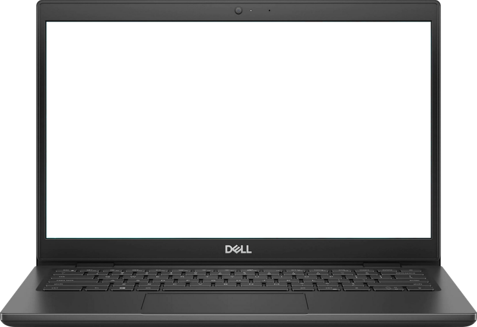

UI DESIGN · WEB DESIGN · WEBFLOW
Totally Fictional Games Studio
A self-directed website concept for a fictional game studio, combining a playful brand identity with a complete, interactive web experience.

THE PROJECT
A fictional game studio with a world of its own.
Totally Fictional Games Studio is an independent website project built around the idea of making a made-up game company feel like a real studio.
I created the studio's identity, designed its website, and built the experience in Webflow. The result brings together fictional games, studio information, news, and careers content in one cohesive website.
DESIGN APPROACH
Making a complete studio experience within two pages.
The original concept called for a larger website with dedicated pages for games, characters, news, studio information, and careers.
A limitation of my Webflow plan meant I had to work within two actual website pages. Instead of scaling back the concept, I organized related content into larger sections with clear navigation and a consistent visual structure.
This approach allowed the website to present different types of studio content while still feeling like one connected experience.
VISUAL DIRECTION & BRAND
BIG IDEAS. BIGGER GAMES. QUESTIONABLE DECISIONS.
With no existing brand to follow, I had the freedom to develop the studio's visual identity and personality from the ground up.
I wanted the studio to feel established without becoming overly serious or corporate. Its playful personality carries through the headlines, game concepts, imagery, and supporting content, while the overall interface keeps the different sections visually connected.

The games page establishes the studio's visual identity and overall tone.

Individual game concepts have their own visual presence within the studio's identity.
WEBSITE SHOWCASE
A closer look at the studio.
From studio information to game announcements, each section contributes to the personality and identity of the fictional company.

About the studio and its fictional team.

News and updates presented within the studio's website.
WEBSITE IN ACTION
See the complete experience.
Explore the finished website through a walkthrough showcasing its layouts, content, and interactive elements.

REFLECTION
From a fictional idea to a finished website.
This project gave me the opportunity to take a
fictional brand from an initial idea through
visual design and into a working website.
Developing the studio's identity, designing its
different content sections, and building the
final experience in Webflow helped me explore
how branding and interface design can work
together.
Working within the two-page limitation also
challenged me to make the most of the available
space without losing the original concept.
The result is a more complete website than
I initially set out to create.